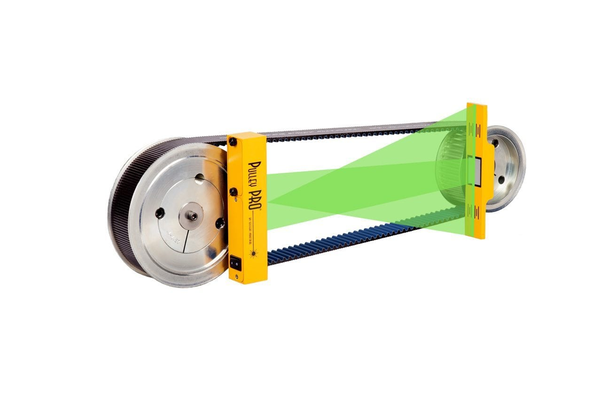

Introduction:
The pulley axis alignment measuring device ensures precise alignment of pulleys, enhancing efficiency and
durability in mechanical systems.This tool employs advanced sensors and lasers to optimize pulley positioning
for optimal performance.

Project Description:
A pulley axis alignment measuring device is a tool or instrument designed to accurately determine
the alignment of pulley axes in mechanical systems. Pulleys are essential components used in various
applications to transmit power and motion through belts or ropes. Proper alignment of pulley axes is
crucial for efficient and reliable operation, as misalignment can lead to increased wear and tear,
reduced efficiency, and even equipment failure. The alignment measuring device typically consists of
sensors, lasers, or other measurement technologies that can detect the positions of pulleys and their
axes.Here's an overview of how such a device might work
Result:
Overall, a pulley axis alignment measuring device plays a crucial role in maintaining the efficiency
and longevity of mechanical systems that rely on pulleys. By providing accurate and real-time alignment
information, it helps operators identify and address misalignment issues promptly, ensuring smooth operation
and minimizing downtime.
next